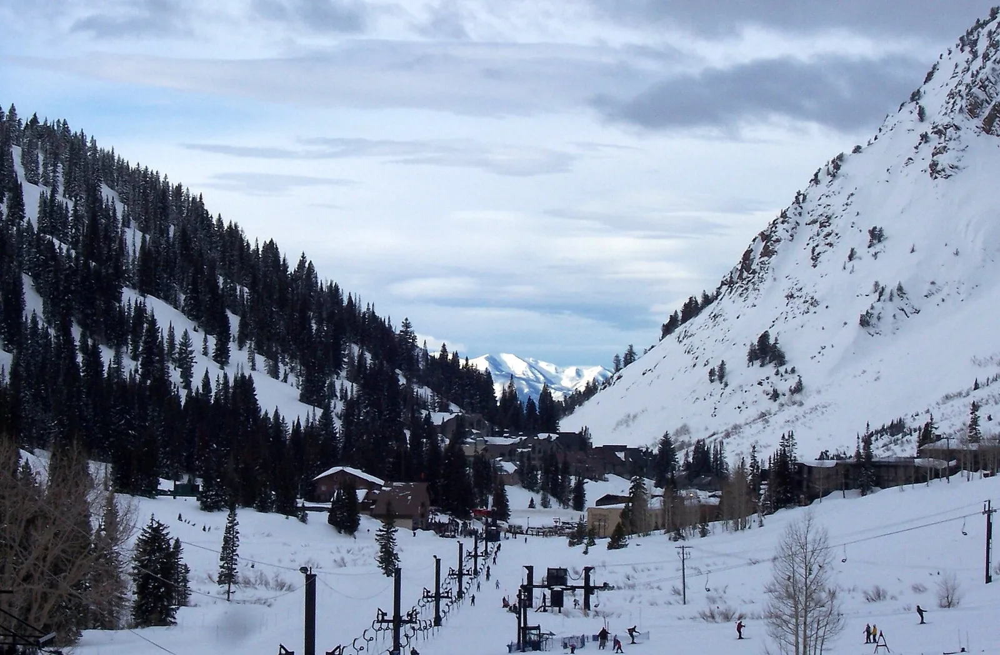

Alta, Little Cottonwood Canyon, Utah · Ski conditions
Alta Conditions and Webcams Today
Alta's webcams and kid facts: skiers only, childcare from 2 months, kids' lessons from age 4. Salt Lake City airport is 32 miles away, about 45 minutes in ideal road conditions, Alta says.
Researched with AI (Miles Rowan) · sources linked and dated · How we check
Alta's own status
Not open yetOpens Wed, Nov 25 (Alta's opening-day page, read Nov 17).
Our webcam read
No cam read from us yet. Cam reads show here only when a recent one has passed a separate automated accuracy check.

Cam by cam
The 8 Alta cam views our reader uses, in our own descriptive words (see Alta's own cam page, as listed in our cam feed Nov 17): Alta base area, Alta snow stake, Alta lift and slopes, Alta mountain slopes view, Alta snowy slopes, Alta high ridge view, Alta forested bowl view, Alta mountain bowl view. Once our reads start, each cam's last read time shows here.
Plan the day with kids
- Season and hours: Alta's opening-day page says its winter starts Wed, Nov 25, 2026, conditions permitting; tickets cover 9:15am to 4:30pm. Alta's "First time skiing Alta?" page still says Nov 20. No closing date posted.
- Skiers only: Alta says "Snowboarding is not permitted." Families with a snowboarder need another mountain.
- Childcare: Alta Children's Center at the Albion base, ages 2 months to 12 years. No hours or rates posted.
- Kids' lessons, ages 4 to 12: All-day group: 4 hours of skiing and lunch; beginners need no lift ticket. Rentals extra; helmets not required. Book by 11:59pm the day before; weekends can sell out.
- Where kids meet: Check in 8:30 to 9:30am at the Ski Adventure Center, Albion base. Lessons 10am to 3:15pm; pick-up 3:15pm.
- Beginner area: Albion is the base for beginners, childcare and ski school: Big Griz conveyor and the Sunnyside lift. Wildcat has no beginner terrain.
- Kids' tickets: Kids 12 and under pay the child rate. Buy online 4 or more days ahead for the best price. Tickets refund online until 11:59pm MT the night before.
- Parking: Reservations needed Fri to Sun and holidays, 8am to 1pm, Dec 11 to Apr 4. None needed from opening day to Dec 10. No overnight parking.
Lesson, parking and bus prices on Alta's pages, read Nov 17:
- Kids' all-day group lesson, ages 4-12 (4 hours of skiing, lunch): $270
- Parking reservation, Fri-Sun and holidays from Dec 11: $25 per day ($10 if you bought lift tickets online)
- Early-morning parking, before 8am: $25 Fri-Sun and holidays, $15 Mon-Thu
- UTA Ski Bus: $5 per ride
From Alta's kids' lesson, parking and first-timers pages. The lesson price doesn't say per child, and the lesson page names no season year. Parking prices are for the 2026-27 season; parking without a reservation when one is needed is a $150 fine. The bus fare is from Alta's first-timers page (no year beside it). Alta posts no lift ticket prices on the pages we read.
Lift tickets and lessons: Alta posts no lift ticket prices on the pages we read, so we can't sum a family-of-4 day; check live. See Alta lift ticket FAQs.
From Alta Kid's Beginner Ski Adventures, Alta: first time skiing Alta?, Alta parking information, Alta lift tickets shop, Alta Kid's First-Time Ski Adventures, Alta: navigating the two base areas, Alta: plan your trip and Alta Opening Day, read Nov 17.
Getting there from Salt Lake City
- Car: Alta is 26 miles from downtown Salt Lake City and 32 from the airport, about 45 minutes in ideal road conditions, it says. The last 8 miles climb SR-210 up Little Cottonwood Canyon.
- Snow days: Utah law requires snow tires or chains on SR-210 from Nov 1 to May 1, and UDOT can limit it to 4WD or chains, or close it for avalanche work. Dial 511 for the road.
- Bus: the UTA Ski Bus runs to Alta; private shuttles are also listed (no shuttle fares posted).
- Base: lessons and childcare are at the Albion base. The Transfer Tow or the Town of Alta shuttle links Albion and Wildcat.
If the snow is thin
- Lift tickets refund online until 11:59pm MT the night before your ski day. Lessons refund in full if cancelled by 11:59pm the day before; after that, no refund.
- Alta's pages we read post no weather or road-closure refund policy. If UDOT closes SR-210, check before you drive.
- Off the slopes: the Alta pages we read list no tubing, sledding or skating.
From Alta lift ticket FAQs and Alta Kid's First-Time Ski Adventures and Alta: first time skiing Alta?, read Nov 17.
How we read the cams: a program looks at Alta's public webcam pictures and notes only what a picture can show: fresh snow, snow cover, snowmaking, moving lifts, how busy the base looks, visibility and the snow stake. Each read shows its time; after 90 minutes it is marked older, after 6 hours it is hidden. We never say whether terrain is safe, icy, groomed or open; Alta's own report decides that. We don't show the cam pictures or count people.
Sources: Alta webcams · Alta Opening Day · Alta Kid's First-Time Ski Adventures · Alta: navigating the two base areas · Alta: plan your trip · Alta Kid's Beginner Ski Adventures · Alta: first time skiing Alta? · Alta parking information · Alta lift tickets shop (read Nov 17). We haven't skied Alta.